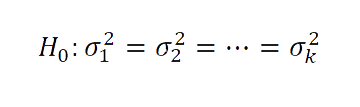

Analisis de varianza
-Conceptos previos
*Hipótesis Nula:
Se denomina hipótesis nula H0, a la hipótesis que se desea contrastar.
El nombre de nula indica que H0, representa la hipótesis que mantendremos a no ser que
los datos indiquen su falsedad, y puede entenderse, por tanto, en el sentido de
neutra.
La hipótesis H0, nunca se considera probada, aunque puede ser rechazada por los
datos.
*Hipótesis Alternativa:
El enfoque actual considera siempre una hipótesis alternativa a la hipótesis nula.
De manera explícita o implícita, la hipótesis nula, se enfrenta a otra hipótesis que
denominaremos hipótesis alternativa y que se denota H1.
En los casos en los que no se especifica H1, de manera explícita, podemos considerar que
ha quedado definida implícitamente como H0, es falsa.
Donde:
H0: μ=μ2=...=μk,
H1: Al menos dos de las medias son diferentes.
Esto puede ser facilmente adaptado para que el analisis consista en la varianza y se
determine el efecto estadistico en varias muestras
Aunque la razón F que se obtiene con el procedimiento del análisis de varianza no es
sensible a las desviaciones de la suposición de varianzas iguales para las K poblaciones
normales cuando las muestras son de igual tamaño, debe tenerse precaución y efectuar una
prueba preliminar sobre la homogeneidad de las varianzas.
En el caso de muestras de tamaños distintos, salta a la vista que es aconsejable
realizar una prueba como ésa, si existe duda razonable acerca de la homogeneidad de las
varianzas de la población.
Por lo tanto, suponga que se desea probar la hipótesis nula.
en comparación con la alternativa
H0: 
H1: No todas las varianzas son iguales.
La prueba que usaremos, denominada prueba de Bartlett, se basa en un estadístico cuya
distribución muestral proporciona valores críticos exactos cuando los tamaños de las
muestras son iguales.
Dichos valores críticos para tamaños de las muestras iguales también se pueden utilizar
para obtener aproximaciones muy exactas de los valores críticos para tamaños muestrales
distintos.
Referencias:
Meyer, P. “Probabilidad y aplicaciones estad´ısticas”(1992)
I Cap´ıtulo 15
I Newbold, P. “Estad´ıstica para los negocios y la economía”(1997)
I Cap´ıtulo 9
I Pe˜na,“Regresi´on y an´alisis de experimentos”(2005)
I Capítulo 10
 bgcastanedaa@correo.udistrital.edu.co
Martinez Blanco David S. (20171020150) dsmartinezb@correo.udistrital.edu.co
Ramos Madera Sair W. (20181020171) wsramosm@correo.udistrital.edu.co
Rojas Mendes Juan C. (20162020427) juacrojasm@correo.udistrital.edu.co")